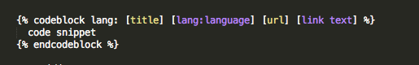
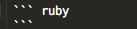
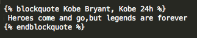

SYNCSORT将PD格式转换成CSF(FS)格式
客户要求看实时报表，可是从数据库导出来的数据却包含如下所示的显示不怎么友好的数据，这时可以用SORT来转换成客户想要的格式。
转换之前的文件用HEX ON命令显示如下。可以看出后面三个字段都是PD类型的，并且都占据8位长度。
VIEW IBMUSER.DFSORT.PDTOCSF.SORTIN Columns 00001 00045
Command ===> HEX ON Scroll ===> CSR
=COLS> ----+----1----+----2----+----3----+----4----+
****** ***************************** Top of Data ******************************
000001 AAAA,20130102,1,MD, à? , é , ? & i
CCCC6FFFFFFFF6F6DC600001670600512110600705380
1111B20130102B1B44B0000440CB0013100CB0003049C
----------------------------------------------------
000002 BBBB,20130102,2,MD, , è?íaà ...comments
Read More
Watir给Amazon.cn充礼品卡
写个脚本去尝试不花钱给自己的Amazon.cn账号充礼品卡，碰碰运气。
#encoding: UTF-8 #添加这一行才可以处理中文
require 'rubygems' #gem install xxx --no-ri --no-rdoc
require 'timeout'
require 'watir-webdriver'
def randCharOfLength(len) #产生随机任意长度的数
chars = ("a".."z").to_a + ("A".."Z").to_a + ("0".."9").to_a
str = ""
1.upto(len) {|i| str << chars[rand(chars.size-1)]}
return str
end
b = Watir::Browser.new(:firefox ...comments
Read More
Watir获得sedo网站上指定后缀域名列表
作为一个’米农‘，sedo.com网站上面的信息很有价值。sedo.com是全球最大的域名交易网站。下面我写的这个脚本是用来取得sedo上面指定后缀(_如.asia)的所有域名列表。
#encoding: UTF-8 #添加这一行才可以处理中文
require 'rubygems' #gem install xxx --no-ri --no-rdoc
require 'timeout'
require 'watir-webdriver'
#b=Watir::Browser.new(:firefox, {:profile => 'default'})
output =File.new("sedo_asia.txt",'w:UTF-8')
def pre_work()
$b=Watir::Browser.new :ff
$b.driver.manage.timeouts.implicit_wait ...comments
Read More
Rexx调用Skeleton JCL提交job的例子
这个例子一共包含3个部分
Rexx主程序：IBMUSER.REXX.EXEC(MYSKELE)
带参数的sekleton JCL：IBMUSER.REXX.SKELL(JCLSKEL)
最终生成的Dynamic JCL：IBMUSER.DYNAM.JCL(SUBJCL)
File Edit Edit_Settings Menu Utilities Compilers Test Help
VIEW IBMUSER.REXX.SKELL(JCLSKEL) - 01.06 Columns 00001 00072
Command ===> Scroll ===> CSR
****** ***************************** Top of Data ******************************
000001 //&JOBNAME JOB '000000000000000000CMP',
000002 // CLASS=3,NOTIFY ...
comments
Read More
ISPF Dialog 开发知识点
需要用ISPF来开发带界面的自动化工具，从0开始。记下些很有用的知识点：
- 执行命令
Panelid可以得到当前ISPF panel的名字
- 执行
7.2这个命令输入panel名字，可以用来刷新你新写的panel，使改 动动态生效，这样就不需要重启TN3270 terminal达到测试panel改动的目的
- ISPF中用
option 7.3可以查看Z开头ISPF系统预留的变量
- 执行命令
3.9查看ISPF所有可用的command
- 知道任意一个panel的名字，如何得到其定义的路径？这里是很好的方法
- To assign a null value or blank value to a dialog variable, use the system variable &Z.
)SET D = &Z ...
comments
Read More
Octopress写博客常用语法总结
自从博客从Wordpress迁徙到Octopress来，也有一段时间了。该是时候总结一下常用的语法了。
插入图片
插入链接
插入代码
方法一

方法二
用3个反引号括起来

引用的用法
用blockquote关键字

引用的效果如下：
Heroes come and go,but legends are forever
特殊反白显示
用反单引号括起来即可，比如Octopress
显示“点击阅读全文”
Step01: 在_config.yml里面设置如下：excerpt_link: "点击阅读全文 →"
效果如下：
就先说这些octopress语法，剩下的基本就是跟Markdown语法相关的了，不写在这里。
comments
Read More
IBM DebugTool中巧用GOTO调试程序
最近接触IBM DebugTool比较多，再说一个在mainframe上面调试COBOL或者PL/I程序的技巧吧。
经常在用IBM DebugTool或者DTCN调试程序的时候，造测试数据很不容易。如果调试过程中发现这次数据没有造成功，我们没有必要每次都退出全部程序重新造数据，可以巧妙地利用“GOTO”语句，随心所欲地在程序里面跳转。
比如下面这一个程序段，在调试过程中我们可以在Call黑盒子程序BLACKBOX的前后都设置一个断点，即9178行以及9202行都设置一个断点，如果我们发现程序跑到了9202行但是返回码不是我们想要的结果，那么运行“GOTO 9178” 即可重新回到Call黑盒子之前，无限反复尝试，重新造数据，直到成功！
SOURCE: TESTPGM1 --1----+----2----+----3----+----4----+----5 LINE: 9178 OF 15895
0020 01 WS-FIELDS.
0021 05 WS-CALLED-PGM ...
comments
Read More
IBM DebugTool的Source Identification Panel
IBM DebugTool，在debug过程中可以按PF4键，或者输入命令:
SOURCE
or
LIST
这时就会显示Source Identification Panel面板，在这里即可得知您当前正在debug的所有程序(Compile Unit)的详细路径。知道了它们都是从哪一个loadlib取到的,这确实对调试很有帮助。
Source Identification Panel
Command ===>
Compile Unit Listing/Source File Display
------------------------- -------------------------------------------- -------
TESTPGM1 IBMUSER.TEST.LOAD.LIB1(TETPGM1) Y
TESTPGM2 IBMUSER.TEST.LOAD.LIB2(TETPGM2) Y
TESTPGM3 IBMUSER.TEST.LOAD.LIB3(TETPGM3 ...
comments
Read More
PL/I和COBOL如何取得当天的日期
在Mainframe上做开发会经常遇到用PL/I或者COBOL取得当天的日期，对于PL/I，一般的公司都采取如下的做法：
DCL PIC_TODAY PIC'999999' INIT(0);
PIC_TODAY = DATE;
IF SUBSTR(DATE,1,2) > '50'
THEN TODAYS_DATE = 19000000 + PIC_TODAY;
ELSE TODAYS_DATE = 20000000 + PIC_TODAY;
我所在的公司也是这种写法来获得YYYYMMDD格式的当日日期，很明显这种写法代码的寿命只有几十年了，相比之下COBOL获得YYYYMMDD格式的当日日期就显得方便得多，一个ACCEPT语句即可:
WORKING-STORAGE SECTION.
01 TODAYS-DATE PIC 9(08).
.
.
.
PROCEDURE DIVISION.
ACCEPT TODAYS ...
comments
Read More
COBOL程序编译报错GYDS1145-S
今天编译一个COBOL老程序的时候报错：IGYDS1145-S
IGYDS1145-S More than 18 digit positions were specified in a "PICTURE" string for a numeric or numeric edited item.
A "PICTURE" string of "S9(18)" was assumed.
原因是老的编译器不支持超过18位的长度变量，但是新的编译器支持。这个帖子里有讨论得更多。
http://ibmmainframes.com/post-9087.html
COBOL Compiler restricts me defining a PIC 9() variable not more than of ...
comments
Read More